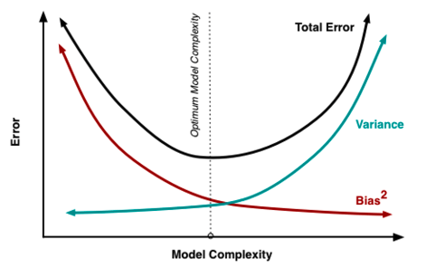

library(mlbench)
data(BostonHousing)
data = BostonHousing
set.seed(123)3 Managing complexity
3.1 Estimating predictive error
You probably remember from statistics that a more complex model always fits the training data better. The decisive question, however, is if it also works better on new (independent) data. Technically, we call this the out-of-sample error, as opposed to the in-sample error, which is the error on the training data.
3.1.1 Splitting off validation data
To check the out-of-sample error, we usually split out some part of the data for later model validation. Let’s look at this at the example of a supervised regression, trying to predict house prices in Boston.
Creating a split by deciding randomly for each data point if it is used for training or validation
n = nrow(BostonHousing)
train = sample.int(n, size = round(0.7*n))Fitting two lms, one with a few predictors, one with a lot of predictors (all interaction up to 3-way)
m1 = lm(medv~., data = data[train,])
m2 = lm(medv~.^3, data = data[train,])Testing predictive ability on training data (in-sample error)
cor(predict(m1), data[train,]$medv)[1] 0.8561528cor(predict(m2), data[train,]$medv)[1] 0.9971297Conclusion: m2 (more complex) is much better on training. As a next step, we are testing the predictive ability on hold-out (aka valikation, out-of-sample error).
cor(predict(m1, newdata = data[-train,] ),
data[-train,]$medv)[1] 0.8637908cor(predict(m2, newdata = data[-train,] ),
data[-train,]$medv)Warning in predict.lm(m2, newdata = data[-train, ]): prediction from
rank-deficient fit; attr(*, "non-estim") has doubtful cases[1] -0.04036532Now, m2 is much worse!
3.1.2 Overfitting vs. underfitting
The phenomenon that the predictive error drops significantly when going from the training to the validation data signals overfitting, i.e. a too complex model!
What about m1 - is m1 just complex enough, or is it too simple? Underfitting cannot be directly diagnosed, you just have to try around if making the model more complex can improve results on the validation data. Let’s try a random forest
library(randomForest)
m3 = randomForest(medv~., data = data[train,])
cor(predict(m3), data[train,]$medv)[1] 0.9345165cor(predict(m3, newdata = data[-train,] ),
data[-train,]$medv)[1] 0.9380828No drop on validation data (i.e. no overfitting), but error on training and validation is much better than for m1 - so this seems to be a better model, and m1 was probably underfitting, i.e. it was not complex enough to get good performance!
3.1.3 Validation vs. cross-validation
A problem with the validation split is that we test only on a certain fraction of the data (say: 20% in a 80/20 split).
If computationally possible, a better method to estimate error is cross-validation. The idea of cross-validation is to perform the train/validation split again and again until all data was used for the validation, and then average the validation error over this data.
Here an example of a k-fold cross-validation, which is akin to 5x an 80/20 split.
k = 5 # folds
split = sample.int(k, n, replace = T)
pred = rep(NA, n)
for(i in 1:k){
m1 = randomForest(medv~., data = data[split != i,])
pred[split == i] = predict(m1, newdata = data[split == i,])
}
cor(pred, data$medv)[1] 0.93688753.1.4 The bootstrap
It doesn’t really fit in here, but as we just introduced validation and cross-valation, we also want to introduce you to the bootstrap, which is next to cross-validation the other main resampling technique.
In a bootstrap, is instead of splitting up the data in test / validation, we sample from the data with replacement and fit the models repeatedly. The idea is to get an estimate about the variability we would expect if we created another dataset of the same size.
k = 10 # bootstrap samples
pred = matrix(NA,k,n)
dim(pred)[1] 10 506for(i in 1:k){
bootSample = sample.int(n, n, replace = TRUE)
m1 = randomForest(medv~., data = data[bootSample,])
pred[i,] = predict(m1)
}
boxplot(pred[,1:10], main = "uncertainty predictions 1-10")
Basically, the distinction between bootstrap and validation / cross-validation is as follows:
- Validation / cross-validation estimates out-of-sample predictive error
- Bootstrap estimates uncertainty / confidence interval on all model outputs (could be prediction and inference).
3.2 The bias-variance trade-off
What we have just seen in the previous chapter is an example of the bias-variance trade-off. The idea is that we look at the error of the model on new test data. The total error comes from 2 contributions:
Bias = systematic error that comes from the fact that the model is not flexible enough, related to underfitting
Variance = stochastic error that comes from that fact that estimates of the model parameters get more uncertain when we add complexity

Which of the following statements about the bias-variance trade-off is correct? (see figure above)3.3 Optimizing the bias-variance trade-off
Optimizing the bias-variance trade-off means adjusting the complexity of the model which can be achieved by:
Feature selection (more features increases the flexibility of the model)
Regularization
3.3.1 Feature selection
Adding features increases the flexibility of the model and the goodness of fit:
library(mlbench)
library(dplyr)
Attaching package: 'dplyr'The following object is masked from 'package:randomForest':
combineThe following objects are masked from 'package:stats':
filter, lagThe following objects are masked from 'package:base':
intersect, setdiff, setequal, uniondata(BostonHousing)
data = BostonHousing
summary(lm(medv~rm, data = data))
Call:
lm(formula = medv ~ rm, data = data)
Residuals:
Min 1Q Median 3Q Max
-23.346 -2.547 0.090 2.986 39.433
Coefficients:
Estimate Std. Error t value Pr(>|t|)
(Intercept) -34.671 2.650 -13.08 <2e-16 ***
rm 9.102 0.419 21.72 <2e-16 ***
---
Signif. codes: 0 '***' 0.001 '**' 0.01 '*' 0.05 '.' 0.1 ' ' 1
Residual standard error: 6.616 on 504 degrees of freedom
Multiple R-squared: 0.4835, Adjusted R-squared: 0.4825
F-statistic: 471.8 on 1 and 504 DF, p-value: < 2.2e-16summary(lm(medv~rm+dis, data = data))$r.squared[1] 0.4955246summary(lm(medv~., data = data))$r.squared[1] 0.7406427# Main effects + all potential interactions:
summary(lm(medv~.^2, data = data))$r.squared[1] 0.9211876The model with all features and their potential interactions has the highest \(R^2\), but it also has the highest uncertainty because there are on average only 5 observations for each parameter (92 parameters and 506 observations). So how do we decide which level of complexity is appropriate for our task? For the data we use to train the model, \(R^2\) will always get better with higher model complexity, so it is a poor decision criterion. We will show this in the Section 3.1.3 section. In short, the idea is that we need to split the data so that we have an evaluation (test) dataset that wasn’t used to train the model, which we can then use in turn to see if our model generalizes well to new data.
3.3.2 Regularization
Regularization means adding information or structure to a system in order to solve an ill-posed optimization problem or to prevent overfitting. There are many ways of regularizing a machine learning model. The most important distinction is between shrinkage estimators and estimators based on model averaging.
Shrinkage estimators are based on the idea of adding a penalty to the loss function that penalizes deviations of the model parameters from a particular value (typically 0). In this way, estimates are “shrunk” to the specified default value. In practice, the most important penalties are the least absolute shrinkage and selection operator; also Lasso or LASSO, where the penalty is proportional to the sum of absolute deviations (\(L1\) penalty), and the Tikhonov regularization aka Ridge regression, where the penalty is proportional to the sum of squared distances from the reference (\(L2\) penalty). Thus, the loss function that we optimize is given by
\[ loss = fit - \lambda \cdot d \]
where fit refers to the standard loss function, \(\lambda\) is the strength of the regularization, and \(d\) is the chosen metric, e.g. \(L1\) or\(L2\):
\[ loss_{L1} = fit - \lambda \cdot \Vert weights \Vert_1 \]
\[ loss_{L2} = fit - \lambda \cdot \Vert weights \Vert_2 \]
\(\lambda\) and possibly d are typically optimized under cross-validation. \(L1\) and \(L2\) can be also combined what is then called elastic net (see Zou and Hastie (2005)).
Model averaging refers to an entire set of techniques, including boosting, bagging and other averaging techniques. The general principle is that predictions are made by combining (= averaging) several models. This is based on on the insight that it is often more efficient having many simpler models and average them, than one “super model”. The reasons are complicated, and explained in more detail in Dormann et al. (2018).
A particular important application of averaging is boosting, where the idea is that many weak learners are combined to a model average, resulting in a strong learner. Another related method is bootstrap aggregating, also called bagging. Idea here is to boostrap (use random sampling with replacement ) the data, and average the bootstrapped predictions.
To see how these techniques work in practice, let’s first focus on LASSO and Ridge regularization for weights in neural networks. We can imagine that the LASSO and Ridge act similar to a rubber band on the weights that pulls them to zero if the data does not strongly push them away from zero. This leads to important weights, which are supported by the data, being estimated as different from zero, whereas unimportant model structures are reduced (shrunken) to zero.
LASSO \(\left(penalty \propto \sum_{}^{} \mathrm{abs}(weights) \right)\) and Ridge \(\left(penalty \propto \sum_{}^{} weights^{2} \right)\) have slightly different properties. They are best understood if we express those as the effective prior preference they create on the parameters:

As you can see, the LASSO creates a very strong preference towards exactly zero, but falls off less strongly towards the tails. This means that parameters tend to be estimated either to exactly zero, or, if not, they are more free than the Ridge. For this reason, LASSO is often more interpreted as a model selection method.
The Ridge, on the other hand, has a certain area around zero where it is relatively indifferent about deviations from zero, thus rarely leading to exactly zero values. However, it will create a stronger shrinkage for values that deviate significantly from zero.
3.3.2.1 Ridge - Example
We can use the glmnet package for Ridge, LASSO, and elastic-net regressions.
We want to predict the house prices of Boston (see help of the dataset):
library(mlbench)
library(dplyr)
library(glmnet)Loading required package: MatrixLoaded glmnet 4.1-8data(BostonHousing)
data = BostonHousing
Y = data$medv
X = data %>% select(-medv, -chas) %>% scale()
hist(cor(X))
m1 = glmnet(y = Y, x = X, alpha = 0)The glmnet function automatically tests different values for lambda:
cbind(coef(m1, s = 0.001), coef(m1, s = 100.5))13 x 2 sparse Matrix of class "dgCMatrix"
s1 s1
(Intercept) 22.53280632 22.53280632
crim -0.79174957 -0.21113427
zn 0.76313031 0.18846808
indus -0.17037817 -0.25120998
nox -1.32794787 -0.21314250
rm 2.85780876 0.46463202
age -0.05389395 -0.18279762
dis -2.38716188 0.07906631
rad 1.42772476 -0.17967948
tax -1.09026758 -0.24233282
ptratio -1.93105019 -0.31587466
b 0.86718037 0.18764060
lstat -3.43236617 -0.460558373.3.2.2 LASSO - Example
By changing \(alpha\) to 1.0 we use a LASSO instead of a Ridge regression:
m2 = glmnet(y = Y, x = X, alpha = 1.0)
cbind(coef(m2, s = 0.001), coef(m2, s = 0.5))13 x 2 sparse Matrix of class "dgCMatrix"
s1 s1
(Intercept) 22.53280632 22.532806324
crim -0.95543108 -0.135047323
zn 1.06718108 .
indus 0.21519500 .
nox -1.95945910 -0.000537715
rm 2.71666891 2.998520195
age 0.05184895 .
dis -3.10566908 -0.244045205
rad 2.73963771 .
tax -2.20279273 .
ptratio -2.13052857 -1.644234575
b 0.88420283 0.561686909
lstat -3.80177809 -3.6821480163.3.2.3 Elastic-net - Example
By setting \(alpha\) to a value between 0 and 1.0, we use a combination of LASSO and Rdige:
m3 = glmnet(y = Y, x = X, alpha = 0.5)
cbind(coef(m3, s = 0.001), coef(m3, s = 0.5))13 x 2 sparse Matrix of class "dgCMatrix"
s1 s1
(Intercept) 22.53280632 22.5328063
crim -0.95716118 -0.3488473
zn 1.06836343 0.1995842
indus 0.21825187 .
nox -1.96211736 -0.7613698
rm 2.71859592 3.0137090
age 0.05299551 .
dis -3.10330132 -1.3011740
rad 2.73321635 .
tax -2.19638611 .
ptratio -2.13041090 -1.8051547
b 0.88458269 0.6897165
lstat -3.79836182 -3.61368533.4 Hyperparameter tuning
3.4.1 What is a hyperparameter?
Generally, parameters such as \(\lambda\) and \(\alpha\) that, for example, control the complexity of the model or other model features such as learning or the optimization are called hyperparameters.
Hyperparameter tuning describes the process of finding the optimal set of hyperparameters for a certain task. They are usually data specific, so they have to tuned for each dataset.
Let’s have a look at this using our glmnet example - we can plot the effect of \(\lambda\) on the effect estimates:
plot(m1)
So which lambda should we choose now? If we calculate the model fit for different lambdas (e.g. using the RMSE):
lambdas = seq(0.001, 1.5, length.out = 100)
RMSEs =
sapply(lambdas, function(l) {
prediction = predict(m1, newx = X, s = l)
RMSE = Metrics::rmse(Y, prediction)
return(RMSE)
})
plot(lambdas, RMSEs)
We see that the lowest lambda achieved the highest RMSE - which is not surprising because the unconstrained model, the most complex model, has the highest fit, so no bias but probably high variance (with respect to the bias-variance tradeoff).
3.4.2 Tuning with a train / test split
We want a model that generalizes well to new data, which we need to “simulate” here by splitting of a holdout before the training and using the holdout then for testing our model. This split is often called the train / test split.
set.seed(1)
library(mlbench)
library(dplyr)
library(glmnet)
data(BostonHousing)
data = BostonHousing
Y = data$medv
X = data %>% select(-medv, -chas) %>% scale()
# Split data
indices = sample.int(nrow(X), 0.2*nrow(X))
train_X = X[indices,]
test_X = X[-indices,]
train_Y = Y[indices]
test_Y = Y[-indices]
# Train model on train data
m1 = glmnet(y = train_Y, x = train_X, alpha = 0.5)
# Test model on test data
pred = predict(m1, newx = test_X, s = 0.01)
# Calculate performance on test data
Metrics::rmse(test_Y, pred)[1] 5.063774Let’s do it again for different values of lambdas:
lambdas = seq(0.0000001, 0.5, length.out = 100)
RMSEs =
sapply(lambdas, function(l) {
prediction = predict(m1, newx = test_X, s = l)
return(Metrics::rmse(test_Y, prediction))
})
plot(lambdas, RMSEs, xlab = "Lambda", ylab = "RMSE", type = "l", las = 2)
abline(v = lambdas[which.min(RMSEs)], col = "red", lwd = 1.5)Alternatively, you automatically run a CV to determine the hyperparameters for glmnet, using the cv.glmnet function which does per default a 5xCV (so 5 splits) and in each split different values for \(\lambda\) are tested
m1 = glmnet::cv.glmnet(x = X, y = Y, alpha = 0.5, nfolds = 5)
m1
Call: glmnet::cv.glmnet(x = X, y = Y, nfolds = 5, alpha = 0.5)
Measure: Mean-Squared Error
Lambda Index Measure SE Nonzero
min 0.0105 78 23.80 3.247 12
1se 0.6905 33 26.88 4.014 8plot(m1)
m1$lambda.min[1] 0.01049538So low values of \(\lambda\) seem to achieve the lowest error, thus the highest predictive performance.
3.4.3 Nested (cross)-validation
In the previous example, we have used the train/test split to find the best model. However, we have not done a validation split yet to see how the finally selected model would do on new data. This is absolutely necessary, because else you will overfit with your model selection to the test data.
If we have several nested splits, we talk about a nested validation / cross-validation. For each level, you can in principle switch between validation and cross-validation. Here, and example of tuning with a inner cross-validation and an outer validation.
# outer split
validation = sample.int(n, round(0.2*n))
dat = data[-validation,]
# inner split
nI = nrow(dat)
hyperparameter = data.frame(mtry = c(3,5))
m = nrow(hyperparameter)
k = 5 # folds
split = sample.int(k, nI, replace = T)
# making predictions for all hyperparameters / splits
pred = matrix(NA, nI, m)
for(l in 1:m){
for(i in 1:k){
m1 = randomForest(medv~., data = dat[split != i,], mtry = hyperparameter$mtry[l])
pred[split == i,l] = predict(m1, newdata = dat[split == i,])
}
}
# getting best hyperparameter option on test
innerLoss = function(x) cor(x, dat$medv)
res = apply(pred, 2, innerLoss)
choice = which.max(res)
# fitting model again with best hyperparameters
# and all test / validation data
mFinal = randomForest(medv~., data = dat, mtry = hyperparameter$mtry[choice])
# testing final prediction on validation data
finalPred = predict(mFinal, newdata = data[validation,])
cor(finalPred,
data[validation,]$medv)[1] 0.939263.5 Exercise - Predicting species interactions
The plant-pollinator database is a collection of plant-pollinator interactions with traits for plants and pollinators. The idea is pollinators interact with plants when their traits fit (e.g. the tongue of a bee needs to match the shape of a flower). We explored the advantage of machine learning algorithms over traditional statistical models in predicting species interactions in our paper. If you are interested you can have a look here.
Task: Tune randomForest model for the Plant-Pollinator dataset
- Prepare data
library(EcoData)
data(plantPollinator_df)
plant_poll = plantPollinator_df
summary(plant_poll) crop insect type
Vaccinium_corymbosum: 256 Andrena_wilkella : 80 Length:20480
Brassica_napus : 256 Andrena_barbilabris: 80 Class :character
Carum_carvi : 256 Andrena_cineraria : 80 Mode :character
Coriandrum_sativum : 256 Andrena_flavipes : 80
Daucus_carota : 256 Andrena_gravida : 80
Malus_domestica : 256 Andrena_haemorrhoa : 80
(Other) :18944 (Other) :20000
season diameter corolla colour
Length:20480 Min. : 2.00 Length:20480 Length:20480
Class :character 1st Qu.: 5.00 Class :character Class :character
Mode :character Median : 19.00 Mode :character Mode :character
Mean : 27.03
3rd Qu.: 25.00
Max. :150.00
NA's :9472
nectar b.system s.pollination inflorescence
Length:20480 Length:20480 Length:20480 Length:20480
Class :character Class :character Class :character Class :character
Mode :character Mode :character Mode :character Mode :character
composite guild tongue body
Length:20480 Length:20480 Min. : 2.000 Min. : 2.00
Class :character Class :character 1st Qu.: 4.800 1st Qu.: 8.00
Mode :character Mode :character Median : 6.600 Median :10.50
Mean : 8.104 Mean :10.66
3rd Qu.:10.500 3rd Qu.:13.00
Max. :26.400 Max. :25.00
NA's :17040 NA's :6160
sociality feeding interaction
Length:20480 Length:20480 0 :14095
Class :character Class :character 1 : 595
Mode :character Mode :character NA's: 5790
# remove NAs
df = plant_poll[complete.cases(plant_poll),] # remove NAs
# remove first two columns (species names)
df = df[,-(1:2)]
# Example:
rf = randomForest(interaction~., data = df[1:500,], trees = 500)
pred = predict(rf, newdata = df[-(1:500),], type = "prob")[,2]
Metrics::auc(as.integer(df[-(1:500),]$interaction)-1, pred)[1] 0.6066048- Create outer split
- Tune mtry under nested Cross-Validation (Bonus 4. Create submissions)
set.seed(42)
n = nrow(df)
# outer split
validation = sample.int(n, round(0.2*n))
dat = df[-validation,]
# inner split
nI = nrow(dat)
hyperparameter = data.frame(mtry = seq(2, 14, by = 1))
m = nrow(hyperparameter)
k = 5 # folds
split = sample.int(k, nI, replace = T)
# making predictions for all hyperparameters / splits
pred = matrix(NA, nI, m)
for(l in 1:m){
for(i in 1:k){
m1 = randomForest(interaction~., data = dat[split != i,], mtry = hyperparameter$mtry[l], trees = 300)
pred[split == i,l] = predict(m1, newdata = dat[split == i,], type = "prob")[,2]
}
}
# getting best hyperparameter option on test
innerLoss = function(x) Metrics::auc(dat$interaction, x)
res = apply(pred, 2, innerLoss)
choice = which.max(res)
# fitting model again with best hyperparameters
# and all test / validation data
mFinal = randomForest(interaction~., data = dat, mtry = hyperparameter$mtry[choice], trees = 300)
# testing final prediction on validation data
finalPred = predict(mFinal, newdata = df[validation,], type = "prob")[,2]
Metrics::auc(df[validation,]$interaction, finalPred)[1] 0.8419224Create submissions:
newdata = plantPollinator_df[is.na(plantPollinator_df$interaction), ]
newdata_imputed = missRanger::missRanger(data = newdata[,-ncol(newdata)], verbose = 0)
newdata_imputed$interaction = NA
predictions = predict(mFinal, newdata = newdata_imputed, type = "prob")[,2]
write.csv(data.frame(y = predictions), file = "rf_max.csv")
Dormann, Carsten F, Justin M Calabrese, Gurutzeta Guillera-Arroita, Eleni Matechou, Volker Bahn, Kamil Bartoń, Colin M Beale, et al. 2018. “Model Averaging in Ecology: A Review of Bayesian, Information-Theoretic, and Tactical Approaches for Predictive Inference.” Ecological Monographs 88 (4): 485–504.
Zou, Hui, and Trevor Hastie. 2005. “Regularization and Variable Selection via the Elastic Net.” Journal of the Royal Statistical Society: Series B (Statistical Methodology) 67 (2): 301–20.